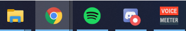

• How to run it
• Good keyboard shortcuts to know
• How to do it manually
• How does it work
• License
• Links
Step 1: Go to exam.net and type in the test key, your first name and your last name.
Step 2: Press the "FETCH THE EXAM" butten and wait a few seconds. You should now see a new page which looks something like this.
Step 3: Go to your files and run "EHP.exe" by double clicking it.
A new window which looks like this should appear.
Step 4: Go back the web browser and make sure that the exam.net website is in focus by just clicking anywhere in it except on the start test button. You can see if it is in focus if the chrome icon on the taskbar is a little more gray then the other icons.
Step 5: Press control + shift + j. A box should now appear on the right side of your browser. Click on that box so it has the focus. You can see if it has the focus if this "|" appears in the box and start to blick.
Step 6: When you are ready to start the test press control + x on your keyboard and wait. Now the program should start typing in text the box.
DON'T THOUCH ANYTHING and wait until the program is done. This should take about 15 - 20 seconds and you know when it is done when the box on the side disappears.
Step 7: Now when EHP(exam hack program) is done you should press control + alt + s to close it. Now you can go in and out of the exam without the website seeing you cheating.
IMPORTANT: If something went wrong or it did not work, go to the "How to do it manually" section and try that one instead.
Control + n: Opens a new chrome window
Control + t: Opens a new chrome tab
Control + w: Closes the current chrome tab (DO NOT USE ON THE EXAM.NET TAB BECAUSE IT WILL CLOSE THE TEST)
Alt + tab: Switches the focus from the current window to the prevous focused window
F11: Toggles between full screen and non full screen mode
Step 1: Do Step 1 and Step 2 in the "How to run it" section
Step 2: Press control + shift + j in the website
Step 3: Open the commands.txt file which is located in the resource directory
Step 4: Copy in the first line under "command1:" in the commands file and paste it into the box that poped up when you did Step 2.
Step 5: Press enter.
Step 6: You should now be in fullscreen and in the test. Now DON NOT CLICK INSIDE THE TEST but go back to the commands file by using alt + tab and copy the first line under "commmand2:"
Step 7: Now go back to chrome using alt + tab again and paste in the copied line into the box that poped up when you did Step 2.
Step 8: Press enter.
Step 9: Go back to the commands file using alt + tab and copy the first line under "command3:".
Step 10: Now go back to chrome and past in the line into the box that poped up when you did Step 2.
Step 11: Press enter.
Step 12: If there is any "OK" tests left just wait for them to finish counting. You see if it has finished if it stops and it should be 12 counts in total.

Step 13: Press control + shift + j and you should now be able to go in and out of the test without the website seeing you cheating.
Disclammer: Some stuff I say here may not be true because I do not now 100%. I mostly say what my theory is using logical guessing and thinking but I may be wrong.
Command1: document.getElementsByClassName("btn btn-lg secondaryStyle noCapitalize big")[0].click();
What this command does is that it finds the first element of the docuemnt object that has the class name "btn btn-lg secondaryStyle noCapitalize big" and clicks it. (It clicks the start test button).
This is going to start the test and make you fullscreen.
You need to do this command, instead of pressing the button, because now your focus will be outside the test when you start instead of inside.
This is good because the blur event(the event that detectes when you leave the website) is only triggered if the website has focus and then loses it.
This time thought the website never had any focus which meant that the event never got triggerd.
This is why you can go back to your file without getting detected cheating
Command2: window.removeEventListener('blur', getEventListeners(window).blur[0].listener);
This command finds the first blur event listener in the window element and removes it. (Removes the blur event listener).
This means that you now can give focus to the websit and then change the focus without getting detected for cheating. The website will thought still detect fullscreen change which we still need to remove.
Command3: document.removeEventListener("fullscreenchange" ,getEventListeners(document).fullscreenchange[0].listener);
This command finds the first fullscreenchange event listener in the docuemnt element and removes it. (Removes the fullscreenchange event listener).
The OK checkers: There is also another event that is changing the fullscreen value from true to false if you are going out of fullscreen that we can't remove
The "OK" things is just a function that gets called when the test starts. It loops 12 times and is checking if the fullscreen variable is true and if it is true it will print out "OK".
If it detects that the fullscreen variable is false then the website will say that you are cheating
We need to wait until it has finished checking before exiting fullscreen because if we would exit then the other event listener would trigger and change the fullscreen value to false and the OK things would see that the fullscreen value is false and say that you are cheating.
The EHP(exam hack program) is licensed under the terms of the GPL Open Source License and is availabel for free. View the LICENSE document for more details.